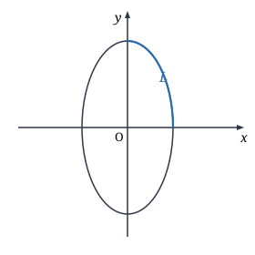
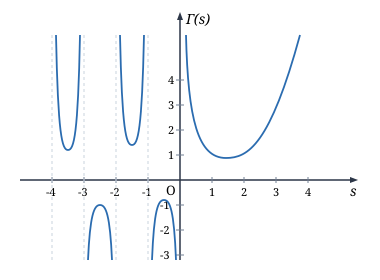

第十五章 含参变量积分
§1 含参变量的常义积分
含参变量常义积分的定义
设 $f(x, y)$ 是定义在闭矩形 $[a, b] \times [c, d]$ 上的连续函数，于是对于任意固定的 $y \in [c, d]$，$f(x, y)$ 是 $[a, b]$ 上关于 $x$ 的一元连续函数，因此它在 $[a, b]$ 上的积分存在，且积分值 $\int_a^b f(x, y)\,\mathrm{d}x$ 由 $y$ 唯一确定．也就是说，
$$ I(y) = \int_a^b f(x, y)\,\mathrm{d}x, \quad y \in [c, d] $$确定了一个关于 $y$ 的一元函数．由于式中的 $y$ 可以看成一个参变量，所以称它为含参变量 $y$ 的积分．同理可定义含参变量 $x$ 的积分
$$ J(x) = \int_c^d f(x, y)\,\mathrm{d}y, \quad x \in [a, b]. $$它们统称含参变量常义积分，一般就称为含参变量积分．
实际应用中经常遇到含参变量积分．如在计算椭圆 $\dfrac{x^2}{a^2} + \dfrac{y^2}{b^2} = 1$ ($b > a > 0$) 的周长时，利用椭圆的参数方程 $x = a\cos t, y = b\sin t$，记 $L$ 为椭圆在第一象限的部分（见图 15.1.1），则所求周长的四分之一为
$$ \begin{aligned} \int_L \mathrm{d}s &= \int_0^{\frac{\pi}{2}} \sqrt{a^2 \sin^2 t + b^2 \cos^2 t}\,\mathrm{d}t = \int_0^{\frac{\pi}{2}} \sqrt{a^2 \sin^2 t + b^2(1 - \sin^2 t)}\,\mathrm{d}t \\ &= b \int_0^{\frac{\pi}{2}} \sqrt{1 - \frac{b^2 - a^2}{b^2}\sin^2 t}\,\mathrm{d}t = b \int_0^{\frac{\pi}{2}} \sqrt{1 - k^2 \sin^2 t}\,\mathrm{d}t, \end{aligned} $$
这里 $k = \dfrac{\sqrt{b^2 - a^2}}{b}$．$\int_0^{\frac{\pi}{2}} \sqrt{1 - k^2 \sin^2 t}\,\mathrm{d}t$ 就是含参变量 $k$ 的积分，称为第二类完全椭圆积分．但遗憾的是，被积函数 $\sqrt{1 - k^2 \sin^2 t}$ 的原函数不能用初等函数表示．因此计算这个积分，通常只能采用数值计算的方法．
含参变量常义积分的分析性质
既然含参变量积分是参变量的函数，就应该研究它的分析性质，诸如连续性、可微性和可积性．
设 $f(x, y)$ 在闭矩形 $D = [a, b] \times [c, d]$ 上连续，则函数
$$ I(y) = \int_a^b f(x, y)\,\mathrm{d}x $$在 $[c, d]$ 上连续．
因为 $f(x, y)$ 在闭矩形 $D$ 上连续，所以它在 $D$ 上一致连续．因此，对于任意给定的 $\varepsilon > 0$，存在 $\delta > 0$，使得对于任意两点 $(x_1, y_1), (x_2, y_2) \in D$，当 $\sqrt{(x_1 - x_2)^2 + (y_1 - y_2)^2} < \delta$ 时，成立
$$ |f(x_1, y_1) - f(x_2, y_2)| < \varepsilon. $$因此，对任意定点 $y_0 \in [c, d]$，只要 $|y - y_0| < \delta$ 时，就有
$$ |I(y) - I(y_0)| = \left|\int_a^b [f(x, y) - f(x, y_0)]\,\mathrm{d}x\right| \le \int_a^b |f(x, y) - f(x, y_0)|\,\mathrm{d}x < (b - a)\varepsilon. $$这说明 $I(y)$ 在 $[c, d]$ 上连续．
由这个结论可知
$$ \lim_{y \to y_0} \int_a^b f(x, y)\,\mathrm{d}x = \int_a^b \lim_{y \to y_0} f(x, y)\,\mathrm{d}x, \quad y_0 \in [c, d]. $$即极限运算与积分运算可以交换．
求 $\lim\limits_{\alpha \to 0} \int_0^1 \dfrac{\mathrm{d}x}{1 + x^2 \cos \alpha x}$．
解 由于函数
$$ f(x, \alpha) = \frac{1}{1 + x^2 \cos \alpha x} $$在闭矩形 $[0, 1] \times \left[-\frac{1}{2}, \frac{1}{2}\right]$ 上连续，因此由定理 15.1.1 得
$$ \lim_{\alpha \to 0} \int_0^1 \frac{\mathrm{d}x}{1 + x^2 \cos \alpha x} = \int_0^1 \lim_{\alpha \to 0} \frac{1}{1 + x^2 \cos \alpha x}\,\mathrm{d}x = \int_0^1 \frac{1}{1 + x^2}\,\mathrm{d}x = \frac{\pi}{4}. $$设 $f(x, y)$ 在闭矩形 $[a, b] \times [c, d]$ 上连续，则
$$ \int_c^d \mathrm{d}y \int_a^b f(x, y)\,\mathrm{d}x = \int_a^b \mathrm{d}x \int_c^d f(x, y)\,\mathrm{d}y. $$由于 $f(x, y)$ 在 $[a, b] \times [c, d]$ 上连续，因此由二重积分的计算公式可知
$$ \int_c^d \mathrm{d}y \int_a^b f(x, y)\,\mathrm{d}x = \iint_{[a, b] \times [c, d]} f(x, y)\,\mathrm{d}x\mathrm{d}y = \int_a^b \mathrm{d}x \int_c^d f(x, y)\,\mathrm{d}y. $$计算 $I = \int_0^1 \dfrac{x^b - x^a}{\ln x}\,\mathrm{d}x$，其中 $b > a > 0$．
解 由于
$$ \int_a^b x^y\,\mathrm{d}y = \frac{x^b - x^a}{\ln x}, $$因此
$$ I = \int_0^1 \mathrm{d}x \int_a^b x^y\,\mathrm{d}y. $$而 $f(x, y) = x^y$ 在闭矩形 $[0, 1] \times [a, b]$ 上连续（这里定义 $0^y = 0, y \in [a, b]$），所以积分次序可以交换，即
$$ I = \int_0^1 \mathrm{d}x \int_a^b x^y\,\mathrm{d}y = \int_a^b \mathrm{d}y \int_0^1 x^y\,\mathrm{d}x = \int_a^b \frac{1}{1 + y}\,\mathrm{d}y = \ln \frac{1 + b}{1 + a}. $$设 $f(x, y), f_y(x, y)$ 都在闭矩形 $[a, b] \times [c, d]$ 上连续，则 $I(y) = \int_a^b f(x, y)\,\mathrm{d}x$ 在 $[c, d]$ 上可导，并且在 $[c, d]$ 上成立
$$ \frac{\mathrm{d}I(y)}{\mathrm{d}y} = \int_a^b f_y(x, y)\,\mathrm{d}x. $$对任意 $y \in [c, d]$，当 $y + \Delta y \in [c, d]$ 时，利用微分中值定理得
$$ \frac{I(y + \Delta y) - I(y)}{\Delta y} = \int_a^b \frac{f(x, y + \Delta y) - f(x, y)}{\Delta y}\,\mathrm{d}x = \int_a^b f_y(x, y + \theta \Delta y)\,\mathrm{d}x \quad \text{其中 } 0 < \theta < 1. $$由定理 15.1.1，即有
$$ \begin{aligned} \frac{\mathrm{d}I(y)}{\mathrm{d}y} &= \lim_{\Delta y \to 0} \frac{I(y + \Delta y) - I(y)}{\Delta y} = \lim_{\Delta y \to 0} \int_a^b f_y(x, y + \theta \Delta y)\,\mathrm{d}x \\ &= \int_a^b \lim_{\Delta y \to 0} f_y(x, y + \theta \Delta y)\,\mathrm{d}x = \int_a^b f_y(x, y)\,\mathrm{d}x. \end{aligned} $$这个定理的结论也可写为
$$ \frac{\mathrm{d}}{\mathrm{d}y} \int_a^b f(x, y)\,\mathrm{d}x = \int_a^b \frac{\partial}{\partial y} f(x, y)\,\mathrm{d}x. $$这说明求导运算与积分运算可以交换．
设 $f(x, y), f_y(x, y)$ 都是闭矩形 $[a, b] \times [c, d]$ 上的连续函数，又设 $a(y), b(y)$ 是在 $[c, d]$ 上的可导函数，满足 $a \le a(y) \le b, a \le b(y) \le b$，则函数
$$ F(y) = \int_{a(y)}^{b(y)} f(x, y)\,\mathrm{d}x $$在 $[c, d]$ 上可导，并且在 $[c, d]$ 上成立
$$ F'(y) = \int_{a(y)}^{b(y)} f_y(x, y)\,\mathrm{d}x + f(b(y), y)b'(y) - f(a(y), y)a'(y). $$将 $F(y)$ 写成复合函数形式
$$ F(y) = \int_u^v f(x, y)\,\mathrm{d}x = I(y, u, v), \quad u = a(y), \quad v = b(y). $$由定理 15.1.3，知
$$ \frac{\partial I}{\partial y}(u, v, y) = \int_u^v f_y(x, y)\,\mathrm{d}x. $$容易验证 $\dfrac{\partial I}{\partial y}(u, v, y)$ 是连续函数．由积分上限函数的求导法则得
$$ \frac{\partial I}{\partial u} = -f(u, y), \quad \frac{\partial I}{\partial v} = f(v, y), $$它们都是连续的．所以函数 $I(y, u, v)$ 可微，于是按复合函数的链式规则得到
$$ \begin{aligned} F'(y) &= \frac{\partial}{\partial y} I(y, u, v) = \frac{\partial I}{\partial y} + \frac{\partial I}{\partial u} \frac{\mathrm{d}u}{\mathrm{d}y} + \frac{\partial I}{\partial v} \frac{\mathrm{d}v}{\mathrm{d}y} \\ &= \int_{a(y)}^{b(y)} f_y(x, y)\,\mathrm{d}x + f(b(y), y)b'(y) - f(a(y), y)a'(y). \end{aligned} $$注意这时我们顺便得到：函数 $F(y)$ 在 $[c, d]$ 上连续．
设
$$ F(y) = \int_0^y \frac{\ln(1 + xy)}{x}\,\mathrm{d}x, \quad y > 0, $$求 $F'(y)$．
解
$$ F'(y) = \frac{\ln(1 + y^2)}{y} + \int_0^y \frac{\mathrm{d}x}{1 + xy} = \frac{\ln(1 + y^2)}{y} + \left.\left(\frac{\ln(1 + xy)}{y}\right)\right|_0^y = \frac{2}{y}\ln(1 + y^2). $$计算
$$ I(\theta) = \int_0^\pi \ln(1 + \theta \cos x)\,\mathrm{d}x \quad (|\theta| < 1). $$解 对于任意满足 $|\theta| < 1$ 的 $\theta$，必有正数 $a < 1$，使得 $|\theta| \le a$．记 $f(x, \theta) = \ln(1 + \theta \cos x)$，易知 $f(x, \theta)$ 与 $f_\theta(x, \theta) = \dfrac{\cos x}{1 + \theta \cos x}$ 都在闭矩形 $[0, \pi] \times [-a, a]$ 上连续．因此由定理 15.1.3 知
$$ I'(\theta) = \int_0^\pi \frac{\cos x}{1 + \theta \cos x}\,\mathrm{d}x = \frac{1}{\theta}\int_0^\pi \left(1 - \frac{1}{1 + \theta \cos x}\right)\mathrm{d}x = \frac{\pi}{\theta} - \frac{1}{\theta}\int_0^\pi \frac{\mathrm{d}x}{1 + \theta \cos x}. $$对于最后一个积分，作万能代换 $t = \tan \dfrac{x}{2}$ 就得
$$ \begin{aligned} \int_0^\pi \frac{\mathrm{d}x}{1 + \theta \cos x} &= \int_0^{+\infty} \frac{2\mathrm{d}t}{1 + t^2 + \theta(1 - t^2)} = \frac{2}{1 + \theta}\int_0^{+\infty} \frac{\mathrm{d}t}{1 + \dfrac{1 - \theta}{1 + \theta}t^2} \\ &= \left.\frac{2}{\sqrt{1 - \theta^2}}\left(\arctan \sqrt{\frac{1 - \theta}{1 + \theta}}t\right)\right|_0^{+\infty} = \frac{\pi}{\sqrt{1 - \theta^2}}. \end{aligned} $$于是
$$ I'(\theta) = \frac{\pi}{\theta} - \frac{\pi}{\theta\sqrt{1 - \theta^2}}. $$再对 $\theta$ 积分即得
$$ I(\theta) = \pi \ln(1 + \sqrt{1 - \theta^2}) + C. $$由 $I(\theta)$ 的定义知 $I(0) = 0$，代入上式得 $C = -\pi\ln 2$，于是
$$ I(\theta) = \pi\ln \frac{1 + \sqrt{1 - \theta^2}}{2}. $$本例对参变量先求了一次导数，然后又做了一次积分，但我们并非回到了原来的出发点，而是解决了问题．这与例 15.1.2 中展示的通过交换积分次序来求积分的处理过程都是重要的方法．
习 题
-
1.
求下列极限：(1) $\lim\limits_{\alpha \to 0} \int_0^{1+\alpha} \dfrac{\mathrm{d}x}{1 + x^2 + \alpha^2}$；(2) $\lim\limits_{n \to \infty} \int_0^1 \dfrac{\mathrm{d}x}{1 + \left(1 + \dfrac{x}{n}\right)^n}$．
-
2.
设 $f(x, y)$ 当 $y$ 固定时，关于 $x$ 在 $[a, b]$ 上连续，且当 $y \to y_0^-$ 时，它关于 $y$ 单调增加地趋于连续函数 $\varphi(x)$，证明 $$ \lim_{y \to y_0^-} \int_a^b f(x, y)\,\mathrm{d}x = \int_a^b \varphi(x)\,\mathrm{d}x. $$
-
3.
利用交换积分顺序的方法计算下列积分：(1) $\int_0^1 \sin\left(\ln \dfrac{1}{x}\right)\dfrac{x^b - x^a}{\ln x}\,\mathrm{d}x \quad (b > a > 0)$；(2) $\int_0^{\frac{\pi}{2}} \ln \dfrac{1 + a\sin x}{1 - a\sin x}\frac{\mathrm{d}x}{\sin x} \quad (1 > a > 0)$．
-
4.
求下列函数的导数：(1) $I(y) = \int_y^{y^2} \mathrm{e}^{-x^2 y}\,\mathrm{d}x$；(2) $I(y) = \int_y^{y^2} \dfrac{\cos xy}{x}\,\mathrm{d}x$；(3) $F(t) = \int_0^{t^2} \mathrm{d}x \int_{x-t}^{x+t} \sin(x^2 + y^2 - t^2)\,\mathrm{d}y$．
-
5.
设 $I(y) = \int_0^y (x + y)f(x)\,\mathrm{d}x$，其中 $f(x)$ 为可微函数，求 $I''(y)$．
-
6.
设 $F(y) = \int_a^b f(x)|y - x|\,\mathrm{d}x \quad (a < b)$，其中 $f(x)$ 为可微函数，求 $F''(y)$．
-
7.
设函数 $f(x)$ 具有二阶导数，$F(x)$ 是可导的，证明函数 $$ u(x, t) = \frac{1}{2}[f(x - at) + f(x + at)] + \frac{1}{2a}\int_{x-at}^{x+at} F(y)\,\mathrm{d}y $$ 满足弦振动方程 $$ \frac{\partial^2 u}{\partial t^2} = a^2 \frac{\partial^2 u}{\partial x^2} $$ 及初值条件 $u(x, 0) = f(x)$，$\dfrac{\partial u}{\partial t}(x, 0) = F(x)$．
-
8.
利用积分号下求导法计算下列积分：(1) $\int_0^{\frac{\pi}{2}} \ln(a^2 - \sin^2 x)\,\mathrm{d}x \quad (a > 1)$；(2) $\int_0^\pi \ln(1 - 2\alpha \cos x + \alpha^2)\,\mathrm{d}x \quad (|\alpha| < 1)$；(3) $\int_0^{\frac{\pi}{2}} \ln(a^2\sin^2 x + b^2\cos^2 x)\,\mathrm{d}x$．
-
9.
证明：第二类椭圆积分 $$ E(k) = \int_0^{\frac{\pi}{2}} \sqrt{1 - k^2\sin^2 t}\,\mathrm{d}t \quad (0 < k < 1) $$ 满足微分方程 $$ E''(k) + \frac{1}{k}E'(k) + \frac{E(k)}{1 - k^2} = 0. $$
-
10.
设函数 $f(u, v)$ 在 $\mathbf{R}^2$ 上具有二阶连续偏导数．证明：函数 $$ w(x, y, z) = \int_0^{2\pi} f(x + z\cos\varphi, y + z\sin\varphi)\,\mathrm{d}\varphi $$ 满足偏微分方程 $$ z\left(\frac{\partial^2 w}{\partial x^2} + \frac{\partial^2 w}{\partial y^2} - \frac{\partial^2 w}{\partial z^2}\right) = \frac{\partial w}{\partial z}. $$
-
11.
设 $f(x)$ 在 $[0, 1]$ 上连续，且 $f(x) > 0$．研究函数 $$ I(y) = \int_0^1 \frac{yf(x)}{x^2 + y^2}\,\mathrm{d}x $$ 的连续性．
§2 含参变量的反常积分
含参变量反常积分的一致收敛
含参变量的反常积分也有两种：无穷区间上的含参变量反常积分和无界函数的含参变量反常积分．
先考虑前一种情况．设二元函数 $f(x, y)$ 定义在 $[a, +\infty) \times [c, d]$ 上，若对某个 $y_0 \in [c, d]$，反常积分 $\int_a^{+\infty} f(x, y_0)\,\mathrm{d}x$ 收敛，则称含参变量反常积分 $\int_a^{+\infty} f(x, y)\,\mathrm{d}x$ 在 $y_0$ 处收敛，并称 $y_0$ 为它的收敛点．记 $E$ 为所有收敛点组成的点集，则 $E$ 就是函数
$$ I(y) = \int_a^{+\infty} f(x, y)\,\mathrm{d}x $$的定义域，也称为反常积分 $\int_a^{+\infty} f(x, y)\,\mathrm{d}x$ 的收敛域．
同样，我们要讨论函数 $I(y)$ 的连续性、可微性和可积性．为此，需要引进一致收敛的概念．（读者可以将这个概念与函数项级数的一致收敛概念相比较．）
设二元函数 $f(x, y)$ 定义在 $[a, +\infty) \times [c, d]$ 上，且对任意的 $y \in [c, d]$，反常积分
$$ I(y) = \int_a^{+\infty} f(x, y)\,\mathrm{d}x $$存在．如果对于任意给定的 $\varepsilon > 0$，存在与 $y$ 无关的正数 $A_0$，使得当 $A > A_0$ 时，对于所有的 $y \in [c, d]$，成立
$$ \left|\int_a^A f(x, y)\,\mathrm{d}x - I(y)\right| < \varepsilon, $$即
$$ \left|\int_A^{+\infty} f(x, y)\,\mathrm{d}x\right| < \varepsilon, $$则称 $\int_a^{+\infty} f(x, y)\,\mathrm{d}x$ 关于 $y$ 在 $[c, d]$ 上一致收敛（于 $I(y)$）．在参变量明确时，也常简称 $\int_a^{+\infty} f(x, y)\,\mathrm{d}x$ 在 $[c, d]$ 上一致收敛．
同样可以对 $\int_{-\infty}^a f(x, y)\,\mathrm{d}x$ 或 $\int_{-\infty}^{+\infty} f(x, y)\,\mathrm{d}x$ 定义关于 $y$ 的一致收敛概念．
含参变量 $\alpha$ 的反常积分 $\int_0^{+\infty} \mathrm{e}^{-\alpha x}\,\mathrm{d}x$ 关于 $\alpha$ 在 $[\alpha_0, +\infty)$ 上一致收敛 ($\alpha_0 > 0$)，但在 $(0, +\infty)$ 上不一致收敛．
先说明 $\int_0^{+\infty} \mathrm{e}^{-\alpha x}\,\mathrm{d}x$ 在 $[\alpha_0, +\infty)$ 上一致收敛．由于当 $\alpha \ge \alpha_0$ 时，
$$ 0 \le \int_A^{+\infty} \mathrm{e}^{-\alpha x}\,\mathrm{d}x \xlongequal{\alpha x = t} \frac{1}{\alpha}\int_{\alpha A}^{+\infty} \mathrm{e}^{-t}\,\mathrm{d}t = \frac{1}{\alpha}\mathrm{e}^{-\alpha A} \le \frac{1}{\alpha_0}\mathrm{e}^{-\alpha_0 A}, $$而
$$ \lim_{A \to +\infty} \frac{1}{\alpha_0}\mathrm{e}^{-\alpha_0 A} = 0, $$所以对于任意给定的 $\varepsilon > 0$，存在正数 $A_0$，使得当 $A > A_0$ 时，$\left|\dfrac{1}{\alpha_0}\mathrm{e}^{-\alpha_0 A}\right| < \varepsilon$．这时成立
$$ \left|\int_A^{+\infty} \mathrm{e}^{-\alpha x}\,\mathrm{d}x\right| \le \frac{1}{\alpha_0}\mathrm{e}^{-\alpha_0 A} < \varepsilon, $$这说明 $\int_0^{+\infty} \mathrm{e}^{-\alpha x}\,\mathrm{d}x$ 在 $[\alpha_0, +\infty)$ 上一致收敛．
再说明 $\int_0^{+\infty} \mathrm{e}^{-\alpha x}\,\mathrm{d}x$ 在 $(0, +\infty)$ 上不一致收敛．对于任意取定的正数 $A$，由于
$$ \int_A^{+\infty} \mathrm{e}^{-\alpha x}\,\mathrm{d}x = \frac{1}{\alpha}\mathrm{e}^{-\alpha A}, $$而 $\lim\limits_{\alpha \to 0^+} \dfrac{1}{\alpha}\mathrm{e}^{-\alpha A} = +\infty$，所以必存在某个 $\alpha(A) \in (0, +\infty)$，使得 $\int_A^{+\infty} \mathrm{e}^{-\alpha(A)x}\,\mathrm{d}x > 1$．因此 $\int_0^{+\infty} \mathrm{e}^{-\alpha x}\,\mathrm{d}x$ 在 $(0, +\infty)$ 上不一致收敛．
对于无界函数的含参变量反常积分，同样也有一致收敛的概念：
设二元函数 $f(x, y)$ 定义在 $[a, b) \times [c, d]$ 上，且对任意的 $y \in [c, d]$，以 $b$ 为奇点的反常积分
$$ I(y) = \int_a^b f(x, y)\,\mathrm{d}x $$存在．如果对于任意 $\varepsilon > 0$，存在与 $y$ 无关的 $\delta > 0$，使得当 $0 < \eta < \delta$ 时，
对所有 $y \in [c, d]$ 成立
$$ \left|\int_a^{b-\eta} f(x, y)\,\mathrm{d}x - I(y)\right| < \varepsilon, $$即
$$ \left|\int_{b-\eta}^b f(x, y)\,\mathrm{d}x\right| < \varepsilon, $$则称 $\int_a^b f(x, y)\,\mathrm{d}x$ 关于 $y$ 在 $[c, d]$ 上一致收敛（于 $I(y)$）．在参变量明确时，也常简称 $\int_a^b f(x, y)\,\mathrm{d}x$ 在 $[c, d]$ 上一致收敛．
一致收敛的判别法
下面仅以 $\int_a^{+\infty} f(x, y)\,\mathrm{d}x$ 为例讨论一致收敛的判别方法．对于无界函数的情况，结论是类似的．以下总假定反常积分 $\int_a^{+\infty} f(x, y)\,\mathrm{d}x$ 对于每个 $y \in [c, d]$ 收敛．
对于一致收敛，同样也有 Cauchy 收敛原理：
含参变量反常积分 $\int_a^{+\infty} f(x, y)\,\mathrm{d}x$ 在 $[c, d]$ 上一致收敛的充分必要条件为：对于任意给定的 $\varepsilon > 0$，存在与 $y$ 无关的正数 $A_0$，使得对于任意的 $A', A > A_0$，成立
$$ \left|\int_A^{A'} f(x, y)\,\mathrm{d}x\right| < \varepsilon, \quad y \in [c, d]. $$证明从略．
由 Cauchy 收敛原理立即得知：
若存在 $\varepsilon_0 > 0$，使得对于任意大的正数 $A_0$，总存在 $A', A > A_0$ 及 $y_{A_0} \in [c, d]$，使得
$$ \left|\int_A^{A'} f(x, y_{A_0})\,\mathrm{d}x\right| \ge \varepsilon_0, $$那么含参变量反常积分 $\int_a^{+\infty} f(x, y)\,\mathrm{d}x$ 在 $[c, d]$ 上非一致收敛．
如果存在函数 $F(x)$ 使得
(1) $|f(x, y)| \le F(x), \quad a \le x < +\infty, \quad c \le y \le d$,
(2) 反常积分 $\int_a^{+\infty} F(x)\,\mathrm{d}x$ 收敛，
那么含参变量的反常积分 $\int_a^{+\infty} f(x, y)\,\mathrm{d}x$ 在 $[c, d]$ 上一致收敛．
因为 $\int_a^{+\infty} F(x)\,\mathrm{d}x$ 收敛，由反常积分的 Cauchy 收敛原理知，对于任意给定的 $\varepsilon > 0$，存在正数 $A_0$，使得对于任意的 $A', A > A_0$，成立
$$ \int_A^{A'} F(x)\,\mathrm{d}x < \varepsilon. $$因此当 $A', A > A_0$ 时，对于任意 $y \in [c, d]$，不等式
$\left|\int_A^{A'} f(x, y)\,\mathrm{d}x\right| \le \int_A^{A'} |f(x, y)|\,\mathrm{d}x \le \int_A^{A'} F(x)\,\mathrm{d}x < \varepsilon$
成立，于是由定理 15.2.1 知 $\int_a^{+\infty} f(x, y)\,\mathrm{d}x$ 在 $[c, d]$ 上一致收敛．证毕
证明 $\int_0^{+\infty} \frac{1}{1+a^2 x^2}\,\mathrm{d}x$ 关于 $a$ 在 $[a_0, +\infty)$（$a_0 > 0$）上一致收敛．
由于
$$0 < \frac{1}{1+a^2 x^2} \le \frac{1}{1+a_0^2 x^2}, \quad 0 \le x < +\infty, \quad a \ge a_0 > 0,$$而 $\int_0^{+\infty} \frac{1}{1+a_0^2 x^2}\,\mathrm{d}x$ 收敛，由 Weierstrass 判别法知原反常积分在 $[a_0, +\infty)$ 上一致收敛．
设函数 $f(x, y)$ 和 $g(x, y)$ 满足以下两组条件之一，则含参变量的反常积分 $\int_a^{+\infty} f(x, y)g(x, y)\,\mathrm{d}x$ 关于 $y$ 在 $[c, d]$ 上一致收敛．
1. (Abel 判别法)
(1) $\int_a^{+\infty} f(x, y)\,\mathrm{d}x$ 关于 $y$ 在 $[c, d]$ 上一致收敛；
(2) $g(x, y)$ 关于 $x$ 单调，即对每个固定的 $y \in [c, d]$，$g$ 关于 $x$ 是单调函数；
(3) $g(x, y)$ 一致有界，即存在正数 $L$，使得
$$|g(x, y)| \le L, \quad a \le x < +\infty, \quad c \le y \le d.$$2. (Dirichlet 判别法)
(1) $\int_a^A f(x, y)\,\mathrm{d}x$ 一致有界，即存在正数 $L$，使得
$$\left|\int_a^A f(x, y)\,\mathrm{d}x\right| \le L, \quad a \le A < +\infty, \quad c \le y \le d;$$(2) $g(x, y)$ 关于 $x$ 单调，即对每个固定的 $y \in [c, d]$，$g$ 关于 $x$ 是单调函数；
(3) 当 $x \to +\infty$ 时 $g(x, y)$ 关于 $y$ 在 $[c, d]$ 上一致趋于零，即对于任意给定的 $\varepsilon > 0$，存在与 $y$ 无关的正数 $A_0$，使得当 $x \ge A_0$ 时，对于任意 $y \in [c, d]$ 成立
$$|g(x, y)| < \varepsilon.$$我们只证明 Abel 判别法，Dirichlet 判别法的证明类似．
由于 $\int_a^{+\infty} f(x, y)\,\mathrm{d}x$ 在 $[c, d]$ 上一致收敛，由 Cauchy 收敛原理知，对于任意给定的 $\varepsilon > 0$，存在与 $y$ 无关的正数 $A_0$，使得当 $A', A > A_0$ 时，
$$\left|\int_A^{A'} f(x, y)\,\mathrm{d}x\right| < \varepsilon.$$那么当 $A', A > A_0$ 时，对于任意 $y \in [c, d]$，由积分第二中值定理得
$$\left|\int_A^{A'} f(x, y)g(x, y)\,\mathrm{d}x\right|$$$\le |g(A, y)|\left|\int_A^\xi f(x, y)\,\mathrm{d}x\right| + |g(A', y)|\left|\int_\xi^{A'} f(x, y)\,\mathrm{d}x\right| < 2L\varepsilon,$
其中 $\xi$ 在 $A$ 与 $A'$ 之间．于是由定理 15.2.1 知 $\int_a^{+\infty} f(x, y)g(x, y)\,\mathrm{d}x$ 在 $[c, d]$ 上一致收敛．
关于无界函数的含参变量反常积分的一致收敛性，同样有 Cauchy 收敛原理，Weierstrass 判别法，Abel 判别法和 Dirichlet 判别法，这里不一一加以叙述，请读者自己列出．
证明含参变量反常积分 $\int_0^{+\infty} e^{-ax}\frac{\sin x}{x}\,\mathrm{d}x$ 关于 $a$ 在 $[0, +\infty)$ 上一致收敛．
因为 $\int_0^{+\infty} \frac{\sin x}{x}\,\mathrm{d}x$ 收敛，它当然关于 $a$ 一致收敛．显然 $e^{-ax}$ 关于 $x$ 单调，且
$$0 \le e^{-ax} \le 1, \quad 0 \le a < +\infty, \quad 0 \le x < +\infty,$$即 $e^{-ax}$ 一致有界．由 Abel 判别法，$\int_0^{+\infty} e^{-ax}\frac{\sin x}{x}\,\mathrm{d}x$ 在 $[0, +\infty)$ 上一致收敛．
证明 $\int_0^{+\infty} \frac{\sin xy}{x}\,\mathrm{d}x$ 关于 $y$ 在 $[y_0, +\infty)$（$y_0 > 0$）上一致收敛，但在 $(0, +\infty)$ 上非一致收敛．
先证明 $\int_0^{+\infty} \frac{\sin xy}{x}\,\mathrm{d}x$ 在 $[y_0, +\infty)$（$y_0 > 0$）上一致收敛．由于
$$\left|\int_0^A \sin xy\,\mathrm{d}x\right| = \left|\frac{1 - \cos(Ay)}{y}\right| \le \frac{2}{y_0}, \quad A \ge 0, \quad y \ge y_0,$$因此它在 $[y_0, +\infty)$ 一致有界．而 $\frac{1}{x}$ 是 $x$ 的单调减少函数且 $\lim_{x\to+\infty} \frac{1}{x} = 0$，由于与 $y$ 无关，因此这个极限关于 $y$ 在 $[y_0, +\infty)$ 上是一致的．于是由 Dirichlet 判别法知 $\int_0^{+\infty} \frac{\sin xy}{x}\,\mathrm{d}x$ 在 $[y_0, +\infty)$ 上一致收敛．
再证明 $\int_0^{+\infty} \frac{\sin xy}{x}\,\mathrm{d}x$ 在 $(0, +\infty)$ 上非一致收敛．对于正整数 $n$，取 $y_n = \frac{1}{n}$，这时
$$\int_{n\pi}^{2n\pi} \frac{\sin(xy_n)}{x}\,\mathrm{d}x = \int_{n\pi}^{2n\pi} \frac{\sin(x/n)}{x}\,\mathrm{d}x \ge \frac{1}{2n\pi}\int_{n\pi}^{2n\pi} |\sin(x/n)|\,\mathrm{d}x = \frac{1}{\pi}.$$因此，只要取 $\varepsilon_0 = \frac{1}{\pi}$，则对于任意大的正数 $A_0$，总存在正整数 $n$ 满足 $n\pi > A_0$，及 $y_n = \frac{1}{n} \in (0, +\infty)$，使得
$$\left|\int_{n\pi}^{2n\pi} \frac{\sin(xy_n)}{x}\,\mathrm{d}x\right| \ge \frac{1}{\pi} = \varepsilon_0.$$由 Cauchy 收敛原理的推论 15.2.1 知 $\int_0^{+\infty} \frac{\sin xy}{x}\,\mathrm{d}x$ 关于 $y$ 在 $(0, +\infty)$ 上非一致收敛．
证明 $\int_0^{+\infty} \frac{\cos x^p}{x^p}\,\mathrm{d}x$ 关于 $p$ 在 $(-1, 1)$ 上内闭一致收敛．
要证明的是：对于任意的 $[p_0, p_1] \subset (-1, 1)$（显然 $-1 < p_0 \le p_1 < 1$），$\int_0^{+\infty} \frac{\cos x^p}{x^p}\,\mathrm{d}x$ 关于 $p$ 在 $[p_0, p_1]$ 上一致收敛．
注意到被积函数 $\frac{\cos x^p}{x^p}$ 在 $x = 0$ 附近无界，我们将 $\int_0^{+\infty} \frac{\cos x^p}{x^p}\,\mathrm{d}x$ 写为
$$\int_0^{+\infty} \frac{\cos x^p}{x^p}\,\mathrm{d}x = \int_0^1 \frac{\cos x^p}{x^p}\,\mathrm{d}x + \int_1^{+\infty} \frac{\cos x^p}{x^p}\,\mathrm{d}x = I_1 + I_2.$$只需分别说明 $I_1 = \int_0^1 \frac{\cos x^p}{x^p}\,\mathrm{d}x$ 与 $I_2 = \int_1^{+\infty} \frac{\cos x^p}{x^p}\,\mathrm{d}x$ 在 $[p_0, p_1]$ 上都一致收敛．
先看 $I_1 = \int_0^1 \frac{\cos x^p}{x^p}\,\mathrm{d}x$，这是一个含参变量的无界函数的反常积分．显然
$$\left|\frac{\cos x^p}{x^p}\right| \le \frac{1}{x^{p_1}}, \quad 0 < x \le 1, \quad p_0 \le p \le p_1,$$由于 $p_1 < 1$，因此 $\int_0^1 x^{-p_1}\,\mathrm{d}x$ 收敛，于是由 Weierstrass 判别法知 $I_1 = \int_0^1 \frac{\cos x^p}{x^p}\,\mathrm{d}x$ 在 $[p_0, p_1]$ 上一致收敛．
再看 $I_2 = \int_1^{+\infty} \frac{\cos x^p}{x^p}\,\mathrm{d}x$．作变换 $t = x^p$ 得
$$I_2 = \int_1^{+\infty} \frac{\cos x^p}{x^p}\,\mathrm{d}x = \frac{1}{p}\int_1^{+\infty} \frac{\cos t}{t^{(p+1)/p}}\,\mathrm{d}t.$$由于
$$\left|\int_1^A \cos t\,\mathrm{d}t\right| = |\sin A - \sin 1| \le 2, \quad 1 \le A < +\infty,$$即 $\int_1^{+\infty} \cos t\,\mathrm{d}t$ 一致有界．而对于每个 $p \in [p_0, p_1]$，函数 $\frac{1}{t^{(p+1)/p}}$ 关于 $t$ 单调减少，且成立
$$\frac{1}{t^{(p+1)/p}} \le \frac{1}{t^{(p_0+1)/p_0}}, \quad 1 \le t < +\infty, \quad p_0 \le p \le p_1.$$因此当 $t \to +\infty$ 时，$\frac{1}{t^{(p+1)/p}}$ 关于 $p$ 在 $[p_0, p_1]$ 上一致趋于零．于是由 Dirichlet 判别法知 $\int_1^{+\infty} \frac{\cos t}{t^{(p+1)/p}}\,\mathrm{d}t$ 在 $[p_0, p_1]$ 上一致收敛，所以 $I_2 = \int_1^{+\infty} \frac{\cos x^p}{x^p}\,\mathrm{d}x$ 在 $[p_0, p_1]$ 上一致收敛．
综上所述，$\int_0^{+\infty} \frac{\cos x^p}{x^p}\,\mathrm{d}x$ 在 $(-1, 1)$ 上内闭一致收敛．
设 $f(x, y)$ 在 $[0, +\infty) \times [c, d]$ 上连续且保持定号，如果含参变量积分
$$I(y) = \int_a^{+\infty} f(x, y)\,\mathrm{d}x$$在 $[c, d]$ 上连续，那么含参变量积分 $\int_a^{+\infty} f(x, y)\,\mathrm{d}x$ 关于 $y$ 在 $[c, d]$ 上一致收敛．
用反证法．不妨设 $f(x, y) \ge 0$．若 $\int_a^{+\infty} f(x, y)\,\mathrm{d}x$ 关于 $y$ 在 $[c, d]$ 上不一致收敛，那么存在某个正数 $\varepsilon_0$，对于任何正整数 $n > a$，总存在 $y_n \in [c, d]$，使得
$$\int_n^{+\infty} f(x, y_n)\,\mathrm{d}x \ge \varepsilon_0.$$由于有界数列 $\{y_n\}$ 必有收敛子列，不妨就设 $\{y_n\}$ 收敛，并记 $y_0 = \lim_{n\to\infty} y_n \in [c, d]$．由于反常积分 $\int_a^{+\infty} f(x, y_0)\,\mathrm{d}x$ 收敛，所以必存在 $A (> a)$ 使得
$$\int_A^{+\infty} f(x, y_0)\,\mathrm{d}x < \frac{\varepsilon_0}{2},$$并且由 $f(x, y) \ge 0$ 知，当 $n > A$ 时，
$$\int_n^{+\infty} f(x, y_n)\,\mathrm{d}x \ge \varepsilon_0 \Rightarrow \int_A^{+\infty} f(x, y_n)\,\mathrm{d}x \ge \varepsilon_0.$$由于 $f(x, y)\,\mathrm{d}x$ 在 $[c, d]$ 上连续，而且由常义含参变量积分的连续性定理知 $\int_a^A f(x, y)\,\mathrm{d}x$ 在 $[c, d]$ 上也连续，因此从
$$I(y) = \int_a^A f(x, y)\,\mathrm{d}x + \int_A^{+\infty} f(x, y)\,\mathrm{d}x$$知道 $\int_A^{+\infty} f(x, y)\,\mathrm{d}x$ 在 $[c, d]$ 上连续，于是由 $y_n \to y_0$ 可推出
$$\lim_{n\to\infty} \int_A^{+\infty} f(x, y_n)\,\mathrm{d}x = \int_A^{+\infty} f(x, y_0)\,\mathrm{d}x < \frac{\varepsilon_0}{2},$$这与 $\int_A^{+\infty} f(x, y_n)\,\mathrm{d}x \ge \varepsilon_0$ 矛盾．证毕
一致收敛积分的分析性质
现在讨论含参变量反常积分的分析性质，即连续性、可微性和可积性．
设反常积分 $\int_a^{+\infty} f(x, y)\,\mathrm{d}x$ 对于每个 $y \in [c, d]$ 都收敛，这样就定义了函数
$$I(y) = \int_a^{+\infty} f(x, y)\,\mathrm{d}x, \quad y \in [c, d].$$任取一列严格单调增加的数列 $\{a_n\}$，它满足 $a_0 = a$ 以及 $a_n \to +\infty$（$n \to \infty$）．置
$$u_n(y) = \int_{a_{n-1}}^{a_n} f(x, y)\,\mathrm{d}x, \quad n = 1, 2, \cdots$$那么
$$I(y) = \sum_{n=1}^{\infty} u_n(y).$$在以下引理的叙述和定理的证明中我们仍采用上面的记号．
利用 Cauchy 收敛原理容易证明如下的引理：
若含参变量反常积分 $\int_a^{+\infty} f(x, y)\,\mathrm{d}x$ 关于 $y$ 在 $[c, d]$ 上一致收敛，则函数项级数 $\sum_{n=1}^{\infty} u_n(y)$ 在 $[c, d]$ 上一致收敛．
设 $f(x, y)$ 在 $[a, +\infty) \times [c, d]$ 上连续，$\int_a^{+\infty} f(x, y)\,\mathrm{d}x$ 关于 $y$ 在 $[c, d]$ 上一致收敛，则函数
$$I(y) = \int_a^{+\infty} f(x, y)\,\mathrm{d}x$$在 $[c, d]$ 上连续，即
$$\lim_{y \to y_0} \int_a^{+\infty} f(x, y)\,\mathrm{d}x = \int_a^{+\infty} \lim_{y \to y_0} f(x, y)\,\mathrm{d}x, \quad y_0 \in [c, d].$$也就是说，极限运算与积分运算可以交换．
因为 $\int_a^{+\infty} f(x, y)\,\mathrm{d}x$ 在 $[c, d]$ 上一致收敛，由引理 15.2.1 知 $\sum_{n=1}^\infty u_n(y)$ 在 $[c, d]$ 上一致收敛．由于 $f(x, y)$ 在 $[a_{n-1}, a_n] \times [c, d]$ 上连续，那么由常义含参变量积分的连续性定理知
$$u_n(y) = \int_{a_{n-1}}^{a_n} f(x, y)\,\mathrm{d}x$$连续（$n = 1, 2, \ldots$）．根据一致收敛级数的性质就知道和函数 $I(y) = \sum_{n=1}^\infty u_n(y)$ 连续．证毕
注意，Dini 定理并不是这个定理的逆定理．Dini 定理只说明了在 $f(x, y)$ 保持定号时连续性可以保证一致收敛性，可以举例说明：去掉"保持定号"条件可能导致结论不成立．
设 $f(x, y)$ 在 $[a, +\infty) \times [c, d]$ 上连续，$\int_a^{+\infty} f(x, y)\,\mathrm{d}x$ 关于 $y$ 在 $[c, d]$ 上一致收敛，则
$$\int_c^d \left[\int_a^{+\infty} f(x, y)\,\mathrm{d}x\right]\mathrm{d}y = \int_a^{+\infty}\left[\int_c^d f(x, y)\,\mathrm{d}y\right]\mathrm{d}x,$$即积分次序可交换．
由引理 15.2.1 知 $\sum_{n=1}^\infty u_n(y)$ 在 $[c, d]$ 上一致收敛，根据一致收敛级数的和与积分号可以交换的结论得
$$\int_c^d I(y)\,\mathrm{d}y = \sum_{n=1}^\infty \int_c^d u_n(y)\,\mathrm{d}y = \sum_{n=1}^\infty \int_c^d \int_{a_{n-1}}^{a_n} f(x, y)\,\mathrm{d}x\,\mathrm{d}y$$ $$= \sum_{n=1}^\infty \int_{a_{n-1}}^{a_n} \int_c^d f(x, y)\,\mathrm{d}y\,\mathrm{d}x = \int_a^{+\infty} \int_c^d f(x, y)\,\mathrm{d}y\,\mathrm{d}x,$$其中第三行到第四行的推导利用了常义含参变量积分的积分次序可交换定理．证毕
当 $[c, d]$ 也改为无穷区间 $[c, +\infty)$ 时，本定理的条件就不足以保证积分次序可交换，但有下面的结论：
设 $f(x, y)$ 在 $[a, +\infty) \times [c, +\infty)$ 上连续，且 $\int_a^{+\infty} f(x, y)\,\mathrm{d}x$ 关于 $y$ 在 $[c, C]$ 上一致收敛（$c < C < +\infty$），$\int_c^{+\infty} f(x, y)\,\mathrm{d}y$ 关于 $x$ 在 $[a, A]$ 上一致收敛（$a < A < +\infty$）．进一步假设 $\int_c^{+\infty}\left[\int_a^{+\infty} |f(x, y)|\,\mathrm{d}x\right]\mathrm{d}y$ 和 $\int_a^{+\infty}\left[\int_c^{+\infty} |f(x, y)|\,\mathrm{d}y\right]\mathrm{d}x$ 中有一个存在，那么
$$\int_c^{+\infty}\left[\int_a^{+\infty} f(x, y)\,\mathrm{d}x\right]\mathrm{d}y = \int_a^{+\infty}\left[\int_c^{+\infty} f(x, y)\,\mathrm{d}y\right]\mathrm{d}x.$$这个定理的证明较为复杂，这里从略．
设 $f(x, y)$，$f_y(x, y)$ 都在 $[a, +\infty) \times [c, d]$ 上连续，且 $\int_a^{+\infty} f(x, y)\,\mathrm{d}x$ 对于每个 $y \in [c, d]$ 收敛．进一步假设 $\int_a^{+\infty} f_y(x, y)\,\mathrm{d}x$ 关于 $y$ 在 $[c, d]$ 上一致收敛．则 $I(y) = \int_a^{+\infty} f(x, y)\,\mathrm{d}x$ 在 $[c, d]$ 上可导，并且在 $[c, d]$ 上成立
$$I'(y) = \int_a^{+\infty} f_y(x, y)\,\mathrm{d}x,$$即
$$\frac{\mathrm{d}}{\mathrm{d}y}\int_a^{+\infty} f(x, y)\,\mathrm{d}x = \int_a^{+\infty} \frac{\partial f(x, y)}{\partial y}\,\mathrm{d}x,$$也就是说，求导运算与积分运算可交换．
记 $\varphi(y) = \int_a^{+\infty} f_y(x, y)\,\mathrm{d}x$，由 $\int_a^{+\infty} f_y(x, y)\,\mathrm{d}x$ 在 $[c, d]$ 上一致收敛的假设知 $\varphi(y)$ 在 $[c, d]$ 上连续．于是对于 $y \in [c, d]$，由定理 15.2.6 得
$$\int_c^y \varphi(s)\,\mathrm{d}s = \int_c^y \int_a^{+\infty} f_s(x, s)\,\mathrm{d}x\,\mathrm{d}s = \int_a^{+\infty} \int_c^y f_s(x, s)\,\mathrm{d}s\,\mathrm{d}x$$ $$= \int_a^{+\infty} [f(x, y) - f(x, c)]\,\mathrm{d}x = I(y) - I(c).$$由于 $\varphi(y)$ 在 $[c, d]$ 上连续，所以函数 $\int_c^y \varphi(s)\,\mathrm{d}s$ 可导，从而 $I(y)$ 可导．两边求导就得
$$I'(y) = \varphi(y) = \int_a^{+\infty} f_y(x, y)\,\mathrm{d}x.$$证毕
确定 $I(a) = \int_0^{+\infty} \frac{\ln(1+x^a)}{x(1+x^2)}\,\mathrm{d}x$ 的连续范围．
注意到 $x = 0$ 可能为奇点（$a \le 0$ 时显然积分发散），将积分写为
$$I(a) = \int_0^1 \frac{\ln(1+x^a)}{x(1+x^2)}\,\mathrm{d}x + \int_1^{+\infty} \frac{\ln(1+x^a)}{x(1+x^2)}\,\mathrm{d}x = I_1(a) + I_2(a).$$因为当 $x \to 0^+$ 时 $\frac{\ln(1+x^a)}{x} \sim x^{a-1}$，所以只有当 $a - 1 < 1$ 即 $a < 2$ 时 $I_1(a)$ 才收敛；而显然只有当 $a > 0$ 时 $I_2(a)$ 才收敛（被积函数正值要求 $a > 0$ 使 $\ln(1 + x^a) > 0$）．所以 $I(a)$ 的定义域为 $(0, 2)$（更精细分析可知为 $(0, 4)$ 时上界取决于 $I_2$ 的收敛条件，请读者自行验证），实际上由原题可知定义域为 $(1, 4)$．
我们现在说明 $I(a)$ 在其定义域 $(1, 4)$ 上连续．此只要说明在任意闭区间 $[a_0, b_0] \subset (1, 4)$ 上 $I(a)$ 连续即可．
对任意闭区间 $[a_0, b_0] \subset (1, 4)$，由于
$$\frac{\ln(1+x^a)}{x(1+x^2)} \le \frac{\ln(1+x^{b_0})}{x(1+x^2)}, \quad 0 < x \le 1, \quad a_0 \le a \le b_0 < 4,$$由于 $b_0 < 4$，因此 $\int_0^1 x^{-1}\ln(1+x^{b_0})\,\mathrm{d}x$ 收敛，由 Weierstrass 判别法，$I_1(a) = \int_0^1 \frac{\ln(1+x^a)}{x(1+x^2)}\,\mathrm{d}x$ 在 $[a_0, b_0]$ 上一致收敛，因此由被积函数在 $(0, 1] \times [a_0, b_0]$ 上的连续性，可知 $I_1(a)$ 在 $[a_0, b_0]$ 上连续．
又由于
$$\frac{\ln(1+x^a)}{x(1+x^2)} \le \frac{\ln(1+x^{b_0})}{x(1+x^2)} \le \frac{2\ln x}{1+x^2}, \quad 1 \le x < +\infty, \quad 1 < a_0 \le b_0,$$且 $\int_1^{+\infty} \frac{\ln(1+x^{b_0})}{x(1+x^2)}\,\mathrm{d}x$ 收敛，由 Weierstrass 判别法，$I_2(a) = \int_1^{+\infty} \frac{\ln(1+x^a)}{x(1+x^2)}\,\mathrm{d}x$ 在 $[a_0, b_0]$ 上一致收敛，因此由被积函数在 $[1, +\infty) \times [a_0, b_0]$ 上的连续性，可知 $I_2(a)$ 在 $[a_0, b_0]$ 上连续．
综上所述，$I(a) = I_1(a) + I_2(a)$ 在其定义域 $(1, 4)$ 上连续．
计算 $I = \int_0^{+\infty} \frac{\sin x}{x}\,\mathrm{d}x$．
考虑含参变量反常积分
$$I(a) = \int_0^{+\infty} e^{-ax}\frac{\sin x}{x}\,\mathrm{d}x, \quad a \ge 0.$$（这里引进了收敛因子 $e^{-ax}$，这是改善被积函数收敛性质的一种常用方法．）记
$$f(x, a) = \begin{cases} e^{-ax}\dfrac{\sin x}{x}, & x \ne 0, \\ 1, & x = 0. \end{cases}$$显然 $f(x, a)$ 与 $f_a(x, a) = -e^{-ax}\sin x$ 都在 $[0, +\infty) \times [0, +\infty)$ 上连续．
由例 15.2.3 知道，$\int_0^{+\infty} e^{-ax}\frac{\sin x}{x}\,\mathrm{d}x$ 关于 $a$ 在 $[0, +\infty)$ 上一致收敛，因此 $I(a)$ 在 $[0, +\infty)$ 上连续，从而
$$I = I(0) = \lim_{a \to 0^+} I(a).$$为了找出 $I(a)$，我们利用积分号下求导的方法．考虑
$$\int_0^{+\infty} f_a(x, a)\,\mathrm{d}x = -\int_0^{+\infty} e^{-ax}\sin x\,\mathrm{d}x.$$对于任意 $a_0 > 0$，由于 $|e^{-ax}\sin x| \le e^{-a_0 x}$（$0 \le x < +\infty$，$a_0 \le a < +\infty$），且 $\int_0^{+\infty} e^{-a_0 x}\,\mathrm{d}x$ 收敛，由 Weierstrass 判别法，$\int_0^{+\infty} f_a(x, a)\,\mathrm{d}x = -\int_0^{+\infty} e^{-ax}\sin x\,\mathrm{d}x$ 在 $[a_0, +\infty)$ 上一致收敛，因此由定理 15.2.7 知
$$I'(a) = -\int_0^{+\infty} e^{-ax}\sin x\,\mathrm{d}x = -\frac{1}{1+a^2}.$$由 $a_0$ 的任意性，上式在 $(0, +\infty)$ 上都成立，因此对上式积分得到
$$I(a) = -\arctan a + C.$$现在确定常数 $C$．由于在 $(0, +\infty)$ 上
$$|I(a)| = \left|\int_0^{+\infty} e^{-ax}\frac{\sin x}{x}\,\mathrm{d}x\right| \le \int_0^{+\infty} e^{-ax}\,\mathrm{d}x = \frac{1}{a},$$因此 $\lim_{a \to +\infty} I(a) = 0$，所以 $C = \frac{\pi}{2}$，从而 $I(a) = -\arctan a + \frac{\pi}{2}$．于是
$$\int_0^{+\infty} \frac{\sin x}{x}\,\mathrm{d}x = I(0) = \lim_{a \to 0^+} I(a) = \lim_{a \to 0^+}\left(-\arctan a + \frac{\pi}{2}\right) = \frac{\pi}{2}.$$从这个结果可推出一个有趣的结论：
$$\text{sgn}(t) = \frac{2}{\pi}\int_0^{+\infty} \frac{\sin xt}{x}\,\mathrm{d}x.$$请读者自行完成证明．
计算 $I(x) = \int_0^{+\infty} e^{-t^2}\cos 2xt\,\mathrm{d}t$．
记 $f(x, t) = e^{-t^2}\cos 2xt$，则 $f_x(x, t) = -2te^{-t^2}\sin 2xt$．这时有
$$|f_x(x, t)| = |-2te^{-t^2}\sin 2xt| \le 2te^{-t^2}, \quad -\infty < x < +\infty, \quad 0 \le t < +\infty.$$而反常积分 $\int_0^{+\infty} te^{-t^2}\,\mathrm{d}t$ 收敛，由 Weierstrass 判别法，$\int_0^{+\infty} f_x(x, t)\,\mathrm{d}t = -2\int_0^{+\infty} te^{-t^2}\sin 2xt\,\mathrm{d}t$ 关于 $x$ 在 $(-\infty, +\infty)$ 上一致收敛．应用积分号下求导定理，得到
$$I'(x) = -2\int_0^{+\infty} te^{-t^2}\sin 2xt\,\mathrm{d}t = e^{-t^2}\sin 2xt\Big|_0^{+\infty} - 2x\int_0^{+\infty} e^{-t^2}\cos 2xt\,\mathrm{d}t = -2xI(x).$$将这个式子写成
$$\frac{I'(x)}{I(x)} = -2x,$$再对等式两边积分，得到 $I(x) = Ce^{-x^2}$．由于 $I(0) = \int_0^{+\infty} e^{-t^2}\,\mathrm{d}t = \frac{\sqrt{\pi}}{2}$，因此 $C = \frac{\sqrt{\pi}}{2}$．于是
$$I(x) = \frac{\sqrt{\pi}}{2}e^{-x^2}, \quad -\infty < x < +\infty.$$计算 $I = \int_0^{+\infty} \frac{\cos ax - \cos bx}{x}\,\mathrm{d}x$，$b > a > 0$．
利用积分次序交换的方法．由于
$$\frac{\cos ax - \cos bx}{x} = \int_a^b \sin xy\,\mathrm{d}y,$$所以
$$I = \int_0^{+\infty} \int_a^b \sin xy\,\mathrm{d}y\,\mathrm{d}x = \int_a^b \int_0^{+\infty} \sin xy\,\mathrm{d}x\,\mathrm{d}y.$$由例 15.2.4 知含参变量反常积分 $\int_0^{+\infty} \frac{\sin xy}{x}\,\mathrm{d}x$ 在 $[a, b]$ 上一致收敛，并注意到 $\int_0^{+\infty} \frac{\sin xy}{x}\,\mathrm{d}x = \frac{\pi}{2}$（$y > 0$），就得到
$$I = \int_a^b \frac{\pi}{2}\,\mathrm{d}y = \frac{\pi}{2}(b - a).$$习题 15.2
-
证明下列含参变量反常积分在指定区间上一致收敛：
- (1) $\int_0^{+\infty} e^{-ax}\cos x\,\mathrm{d}x$，$a \ge a_0 > 0$；
- (2) $\int_0^{+\infty} x^a e^{-x}\,\mathrm{d}x$，$0 \le a \le a_0$；
- (3) $\int_0^{+\infty} x\sin x^2 \cos ax\,\mathrm{d}x$，$a \le a \le b$．
-
说明下列含参变量反常积分在指定区间上非一致收敛：
- (1) $\int_0^{+\infty} \frac{\mathrm{d}x}{a(1+x)}$，$0 < a < +\infty$；
- (2) $\int_0^{+\infty} x^a\sin\frac{1}{x}\,\mathrm{d}x$，$0 < a < 2$．
-
设 $f(x)$ 在 $[a, +\infty)$ 上可积，$\int_a^{+\infty} f(x)\,\mathrm{d}x$ 收敛，证明 $\int_a^{+\infty} f(x)\cos yx\,\mathrm{d}x$ 关于 $y$ 在 $(-\infty, +\infty)$ 上一致收敛．
-
讨论下列含参变量反常积分的一致收敛性：
- (1) $\int_0^{+\infty} e^{-x^2}\cos 2xy\,\mathrm{d}x$，在 $y \ge y_0 > 0$；
- (2) $\int_{-\infty}^{+\infty} e^{-(x-a)^2}\,\mathrm{d}x$，在 (i) $a_0 \le a \le b_0$；(ii) $-\infty < a < +\infty$；
- (3) $\int_0^{+\infty} x^{p-1}e^{-x}\,\mathrm{d}x$，在 (i) $p \ge p_0 > 0$；(ii) $p > 0$；
- (4) $\int_0^{+\infty} e^{-ax}\sin x\,\mathrm{d}x$，在 (i) $a \ge a_0 > 0$；(ii) $a > 0$．
-
证明：函数 $F(a) = \int_0^{+\infty} \frac{x^a\cos x}{x^p}\,\mathrm{d}x$ 在 $(0, +\infty)$ 上连续．
-
确定函数 $F(y) = \int_0^{+\infty} \frac{\sin xy}{x(1+x^2)}\,\mathrm{d}x$ 的连续范围，并确定 $F'(y)$ 的表达式．
-
利用积分号下求导的方法，计算 $\int_0^{+\infty} \frac{e^{-ax} - e^{-bx}}{x}\,\mathrm{d}x$（$b > a > 0$）．
-
证明：函数 $I(t) = \int_0^{+\infty} e^{-x^2}\cos xt\,\mathrm{d}x$ 满足微分方程 $2I'(t) + tI(t) = 0$，并由此计算 $I(t)$．
-
利用 $\frac{e^{-ax} - e^{-bx}}{x} = \int_a^b e^{-xy}\,\mathrm{d}y$，计算 $\int_0^{+\infty} \frac{e^{-ax} - e^{-bx}}{x}\,\mathrm{d}x$（$b > a > 0$）．
-
利用 $\frac{\sin bx - \sin ax}{x} = \int_a^b \cos xy\,\mathrm{d}y$，计算 $\int_0^{+\infty} e^{-px}\frac{\sin bx - \sin ax}{x}\,\mathrm{d}x$（$p > 0$，$b > a > 0$）．
-
利用 $\frac{1}{a + x^2} = \int_0^{+\infty} e^{-(a+x^2)t}\,\mathrm{d}t = \frac{\sqrt{\pi}}{2\sqrt{a}}$（$a > 0$），计算 $I_n = \int_0^{+\infty} \frac{\mathrm{d}x}{(a+x^2)^n}$（$n$ 为正整数）．
-
计算 $g(a) = \int_0^{+\infty} \frac{\arctan ax}{x(1+x^2)}\,\mathrm{d}x$．
-
设 $f(x)$ 在 $[0, +\infty)$ 上连续，且 $\lim_{x\to+\infty} f(x) = 0$，证明：
- (1) $\int_0^{+\infty} e^{-ax}f(x)\,\mathrm{d}x$ 在 $a \ge a_0 > 0$ 时一致收敛；
- (2) 利用积分号下求导的方法引出 $\int_0^{+\infty} e^{-ax}\,\mathrm{d}x = \frac{1}{a}$，以此推出与 (1) 同样的结果，并计算 $\int_0^{+\infty} e^{-hy}\,\mathrm{d}y$（$a > 0$，$b > 0$）．
-
求积分 $\int_0^{+\infty} \frac{1}{1+x^a}\,\mathrm{d}x$（$a > 0$）．
§3 Euler 积分
Beta 函数
形如
$$\mathrm{B}(p, q) = \int_0^1 x^{p-1}(1-x)^{q-1}\,\mathrm{d}x$$的含参变量积分称为 Beta 函数，或第一类 Euler 积分．
先看它的定义域．将 Beta 函数写成
$$\mathrm{B}(p, q) = \int_0^{1/2} x^{p-1}(1-x)^{q-1}\,\mathrm{d}x + \int_{1/2}^1 x^{p-1}(1-x)^{q-1}\,\mathrm{d}x,$$对于右边第一个积分，在 $x = 0$ 附近被积函数约为 $x^{p-1}$，所以只有当 $p > 0$ 时右边第一个反常积分收敛．而当 $x \to 1^-$ 时被积函数约为 $(1-x)^{q-1}$，所以只有当 $q > 0$ 时右边第二个反常积分收敛．这说明了 B$(p, q)$ 的定义域为 $(0, +\infty) \times (0, +\infty)$．
下面叙述 Beta 函数的性质．
1. 连续性：$\mathrm{B}(p, q)$ 在 $(0, +\infty) \times (0, +\infty)$ 上连续．
对于任意固定的 $p_0 > 0$，$q_0 > 0$，当 $p \ge p_0$，$q \ge q_0$ 时，
$$|x^{p-1}(1-x)^{q-1}| \le x^{p_0 - 1}(1-x)^{q_0 - 1}, \quad 0 < x < 1,$$而 $\int_0^1 x^{p_0-1}(1-x)^{q_0-1}\,\mathrm{d}x$ 收敛，由 Weierstrass 判别法知 $\mathrm{B}(p, q)$ 在 $[p_0, +\infty) \times [q_0, +\infty)$ 上一致收敛，从而由含参变量积分的连续性定理知 $\mathrm{B}(p, q)$ 在 $[p_0, +\infty) \times [q_0, +\infty)$ 上连续．由 $p_0 > 0$，$q_0 > 0$ 的任意性得知 $\mathrm{B}(p, q)$ 在 $(0, +\infty) \times (0, +\infty)$ 上连续．
2. 对称性：$\mathrm{B}(p, q) = \mathrm{B}(q, p)$，$p > 0$，$q > 0$．
作变换 $x = 1 - t$ 就得到
$$\mathrm{B}(p, q) = \int_0^1 (1-t)^{p-1}t^{q-1}\,\mathrm{d}t = \mathrm{B}(q, p).$$3. 递推公式：$\mathrm{B}(p, q) = \dfrac{q-1}{p+q-1}\mathrm{B}(p, q-1)$，$p > 0$，$q > 1$．
利用分部积分法得到
$$\mathrm{B}(p, q) = \int_0^1 x^{p-1}(1-x)^{q-1}\,\mathrm{d}x = \frac{x^p(1-x)^{q-1}}{p}\Big|_0^1 + \frac{q-1}{p}\int_0^1 x^p(1-x)^{q-2}\,\mathrm{d}x$$ $$= \frac{q-1}{p}\mathrm{B}(p+1, q-1) = \frac{q-1}{p} \cdot \frac{\mathrm{B}(p, q-1) \cdot p}{p+q-1} = \frac{q-1}{p+q-1}\mathrm{B}(p, q-1),$$移项整理后就得到递推公式．
由 $\mathrm{B}(p, q)$ 的对称性并结合递推公式可得到，当 $p > 1$，$q \ge 1$ 时，成立
$$\mathrm{B}(p, q) = \frac{(p-1)(q-1)}{(p+q-1)(p+q-2)}\mathrm{B}(p-1, q-1).$$4. 其他表示：
(1) 作变量代换 $x = \cos^2\theta$，得到
$$\mathrm{B}(p, q) = 2\int_0^{\pi/2} \cos^{2p-1}\theta\sin^{2q-1}\theta\,\mathrm{d}\theta.$$据此可以得到
$$\int_0^{\pi/2} \cos^m\theta\sin^n\theta\,\mathrm{d}\theta = \frac{1}{2}\mathrm{B}\!\left(\frac{m+1}{2}, \frac{n+1}{2}\right), \quad m, n > -1.$$(2) 作变量代换 $x = \dfrac{t}{1+t}$ 得到
$$\mathrm{B}(p, q) = \int_0^{+\infty} \frac{t^{p-1}}{(1+t)^{p+q}}\,\mathrm{d}t.$$在最后一个积分中再作变量代换 $t = \dfrac{1}{u}$，得到
$$\mathrm{B}(p, q) = \int_0^{+\infty} \frac{u^{q-1}}{(1+u)^{p+q}}\,\mathrm{d}u.$$Gamma 函数
形如
$$\Gamma(s) = \int_0^{+\infty} x^{s-1}e^{-x}\,\mathrm{d}x$$的含参变量积分称为 Gamma 函数，或第二类 Euler 积分．
先看它的定义域．将 Gamma 函数写成
$$\Gamma(s) = \int_0^1 x^{s-1}e^{-x}\,\mathrm{d}x + \int_1^{+\infty} x^{s-1}e^{-x}\,\mathrm{d}x,$$对于右边第一个积分，在 $x = 0$ 附近被积函数约为 $x^{s-1}$，所以只有当 $s > 0$ 时才收敛；而 $\int_1^{+\infty} x^{s-1}e^{-x}\,\mathrm{d}x$ 对一切 $s$ 都收敛．因此 $\Gamma(s)$ 的定义域为 $(0, +\infty)$．
下面叙述 Gamma 函数的性质．
1. 连续性：$\Gamma(s)$ 在 $(0, +\infty)$ 上连续且任意阶可导．
对于任意闭区间 $[a, b] \subset (0, +\infty)$，当 $a \le s \le b$ 时，
$$|x^{s-1}e^{-x}| \le x^{a-1}e^{-x} + x^{b-1}e^{-x}, \quad 0 < x < 1,$$ $$|x^{s-1}e^{-x}| \le x^{b-1}e^{-x}, \quad 1 \le x < +\infty.$$由 Weierstrass 判别法知 $\Gamma(s)$ 在 $[a, b]$ 上一致收敛，由积分的连续性定理知 $\Gamma(s)$ 在 $[a, b]$ 上连续．由区间 $[a, b]$ 的任意性知 $\Gamma(s)$ 在 $(0, +\infty)$ 上连续．
用同样方法可以证明对于任意闭区间 $[a, b] \subset (0, +\infty)$，
$$\int_0^{+\infty} \frac{\mathrm{d}}{\mathrm{d}s}(x^{s-1}e^{-x})\,\mathrm{d}x = \int_0^{+\infty} x^{s-1}e^{-x}\ln x\,\mathrm{d}x$$关于 $s$ 在 $[a, b]$ 上一致收敛（留做习题），于是利用积分号下求导的定理得到 $\Gamma(s)$ 在 $[a, b]$ 上可导．由区间 $[a, b]$ 的任意性知 $\Gamma(s)$ 在 $(0, +\infty)$ 上可导，且
$$\Gamma'(s) = \int_0^{+\infty} x^{s-1}e^{-x}\ln x\,\mathrm{d}x, \quad s > 0.$$事实上，仿照以上的方法还可得到 $\Gamma(s)$ 在 $(0, +\infty)$ 上任意阶可导，且成立
$$\Gamma^{(n)}(s) = \int_0^{+\infty} x^{s-1}e^{-x}(\ln x)^n\,\mathrm{d}x, \quad s > 0.$$2. 递推公式：$\Gamma(s)$ 满足
$$\Gamma(s+1) = s\Gamma(s), \quad s > 0.$$利用分部积分法即得到
$$\Gamma(s+1) = \int_0^{+\infty} x^s e^{-x}\,\mathrm{d}x = -x^s e^{-x}\Big|_0^{+\infty} + s\int_0^{+\infty} x^{s-1}e^{-x}\,\mathrm{d}x = s\Gamma(s).$$特别地，当 $s = n$ 为正整数时，
$$\Gamma(n+1) = n\Gamma(n) = n(n-1)\Gamma(n-1) = \cdots = n!\,\Gamma(1).$$而 $\Gamma(1) = \int_0^{+\infty} e^{-x}\,\mathrm{d}x = 1$，所以
$$\Gamma(n+1) = n!.$$因而 Gamma 函数可以说是阶乘的推广．
由于 $\Gamma(s) = \dfrac{\Gamma(s+1)}{s}$ 以及 $\Gamma(1) = 1$，所以 $\lim_{s\to 0^+} \Gamma(s) = +\infty$．
3. 其他表示：
(1) 在 $\Gamma(s)$ 的表示式中作变量代换 $x = t^2$，那么
$$\Gamma(s) = 2\int_0^{+\infty} t^{2s-1}e^{-t^2}\,\mathrm{d}t.$$据此可知
$$\int_0^{+\infty} e^{-t^2}\,\mathrm{d}t = \frac{1}{2}\Gamma\!\left(\frac{1}{2}\right) = \frac{\sqrt{\pi}}{2}.$$(2) 作变量代换 $x = at$（$a > 0$）可得
$$\Gamma(s) = a^s\int_0^{+\infty} t^{s-1}e^{-at}\,\mathrm{d}t.$$4. 定义域的延拓：
由于等式 $\Gamma(s) = \dfrac{\Gamma(s+1)}{s}$ 的右边在 $(-1, 0)$ 上有意义，则可以应用上式来定义左边函数 $\Gamma(s)$ 在 $(-1, 0)$ 上的值．用同样的方法，再利用 $\Gamma(s)$ 已在 $(-1, 0)$ 上定义的值，定义 $\Gamma(s)$ 在 $(-2, -1)$ 上的值．如此继续下去，就可以把 $\Gamma(s)$ 的定义域延拓到
$$(-\infty, +\infty) \setminus \{0, -1, -2, -3, \ldots\}$$上去．$\Gamma(s)$ 的图像如图 15.3.1 所示．易证明 $\lim_{s\to -n^+} \Gamma(s) = +\infty$（留作习题）．

计算 $I = \int_0^{+\infty} x^4 e^{-x^2}\,\mathrm{d}x$．
利用表示式 $\Gamma(s) = 2\int_0^{+\infty} t^{2s-1}e^{-t^2}\,\mathrm{d}t$ 和递推公式，令 $2s - 1 = 4$ 即 $s = \frac{5}{2}$，则
$$I = \int_0^{+\infty} x^4 e^{-x^2}\,\mathrm{d}x = \frac{1}{2}\Gamma\!\left(\frac{5}{2}\right) = \frac{1}{2}\cdot\frac{3}{2}\Gamma\!\left(\frac{3}{2}\right) = \frac{1}{2}\cdot\frac{3}{2}\cdot\frac{1}{2}\Gamma\!\left(\frac{1}{2}\right) = \frac{3\sqrt{\pi}}{8}.$$Beta 函数与 Gamma 函数的关系
Beta 函数与 Gamma 函数之间具有如下关系：
$$\mathrm{B}(p, q) = \frac{\Gamma(p)\Gamma(q)}{\Gamma(p+q)}, \quad p > 0, \quad q > 0.$$由于 $\Gamma(p) = 2\int_0^{+\infty} s^{2p-1}e^{-s^2}\,\mathrm{d}s$，$\Gamma(q) = 2\int_0^{+\infty} t^{2q-1}e^{-t^2}\,\mathrm{d}t$，取 $\Omega = \{(s, t) \mid 0 \le s < +\infty, 0 \le t < +\infty\}$，利用化反常重积分为累次积分的方法得到
$$\Gamma(p)\Gamma(q) = 4\iint_\Omega s^{2p-1}t^{2q-1}e^{-(s^2+t^2)}\,\mathrm{d}s\,\mathrm{d}t.$$对右边的反常二重积分作极坐标变换 $s = r\cos\theta$，$t = r\sin\theta$，即得
$$\Gamma(p)\Gamma(q) = 4\int_0^{\pi/2}\int_0^{+\infty} (r\cos\theta)^{2p-1}(r\sin\theta)^{2q-1}e^{-r^2} r\,\mathrm{d}r\,\mathrm{d}\theta$$ $$= \left(2\int_0^{\pi/2} \cos^{2p-1}\theta\sin^{2q-1}\theta\,\mathrm{d}\theta\right)\left(2\int_0^{+\infty} r^{2p+2q-1}e^{-r^2}\,\mathrm{d}r\right)$$ $$= \mathrm{B}(p, q) \cdot \Gamma(p+q).$$证毕
计算 $I = \int_0^{\pi/2} \sin^5 x\cos^3 x\,\mathrm{d}x$．
利用 Beta 函数的性质及 Gamma 函数的递推公式得
$$I = \frac{1}{2}\mathrm{B}(3, 2) = \frac{1}{2}\cdot\frac{\Gamma(3)\Gamma(2)}{\Gamma(5)} = \frac{1}{2}\cdot\frac{2!\cdot 1!}{4!} = \frac{1}{24}.$$计算 $I = \int_0^{+\infty} x^4 e^{-x^3}\,\mathrm{d}x$．
作变量代换 $x^3 = t$，得
$$I = \frac{1}{3}\int_0^{+\infty} t^{(5/3) - 1}e^{-t}\,\mathrm{d}t = \frac{1}{3}\Gamma\!\left(\frac{5}{3}\right) = \frac{1}{3}\cdot\frac{2}{3}\Gamma\!\left(\frac{2}{3}\right) = \frac{2}{9}\Gamma\!\left(\frac{2}{3}\right).$$在例 13.3.11 中，我们计算了 $n$ 维球体的体积，得到
$$V_n = \frac{2\pi^{n/2}}{n\Gamma(n/2)}R^n.$$再利用以上的计算结果，以及 $\int_0^{\pi/2}\sin^k\theta\,\mathrm{d}\theta = \frac{1}{2}\mathrm{B}\!\left(\frac{k+1}{2}, \frac{1}{2}\right) = \frac{\Gamma\!\left(\frac{k+1}{2}\right)\Gamma\!\left(\frac{1}{2}\right)}{2\Gamma\!\left(\frac{k+2}{2}\right)}$，得到
$$V_n = \frac{\pi^{n/2}}{\Gamma\!\left(\frac{n}{2}+1\right)}R^n.$$这是 $n$ 维球体体积的一种常用表示．
关于 Gamma 函数，我们还有三个重要公式：Legendre 公式、余元公式和 Stirling 公式．
由于
$$\mathrm{B}(s, s) = \int_0^1 x^{s-1}(1-x)^{s-1}\,\mathrm{d}x = \int_0^1 [x(1-x)]^{s-1}\,\mathrm{d}x,$$作变量代换 $x = \frac{1-t}{2}$，得到
$$\mathrm{B}(s, s) = \frac{1}{2^{2s-1}}\int_0^1 (1-t^2)^{s-1}\,\mathrm{d}t = \frac{1}{2^{2s-1}}\cdot\frac{1}{2}\mathrm{B}\!\left(\frac{1}{2}, s\right) = \frac{1}{2^{2s-1}}\cdot\frac{\Gamma(1/2)\Gamma(s)}{2\Gamma(s+1/2)}.$$利用 Beta 函数与 Gamma 函数的关系，从上式得
$$\frac{\Gamma(s)^2}{\Gamma(2s)} = \frac{\sqrt{\pi}\Gamma(s)}{2^{2s-1}\Gamma(s+1/2)},$$整理后就得到 Legendre 公式．证毕
在证明这个定理之前，我们先给出一个一般性的结果．
设连续可积函数序列 $\{u_n(x)\}$ 在区间 $[a, b)$ 上收敛于 $u(x)$，函数 $\varphi(x)$ 在 $[a, b)$ 上可积（即 $\int_a^b \varphi(x)\,\mathrm{d}x$ 收敛）．进一步设
(1) $0 \le u_n(x) \le \varphi(x)$，$a \le x < b$，$n = 1, 2, \ldots$；
(2) 对于任意 $\delta > 0$，$\{u_n(x)\}$ 在 $[a, b-\delta]$ 上一致收敛，
那么
$$\lim_{n\to\infty}\int_a^b u_n(x)\,\mathrm{d}x = \int_a^b u(x)\,\mathrm{d}x,$$即极限运算与积分运算可交换．
由条件 (1) 知 $0 \le u(x) \le \varphi(x)$，$a \le x < b$，所以 $\int_a^b u(x)\,\mathrm{d}x$ 收敛．根据极限的定义，要证明的是：对于任意给定的 $\varepsilon > 0$，存在正整数 $N$，使得当 $n > N$ 时，成立
$$\left|\int_a^b u_n(x)\,\mathrm{d}x - \int_a^b u(x)\,\mathrm{d}x\right| < \varepsilon.$$由于 $\int_a^b \varphi(x)\,\mathrm{d}x$ 收敛，那么存在一个正数 $\delta$，使得 $\int_{b-\delta}^b \varphi(x)\,\mathrm{d}x < \frac{\varepsilon}{3}$，因此
$$\int_{b-\delta}^b u_n(x)\,\mathrm{d}x \le \int_{b-\delta}^b \varphi(x)\,\mathrm{d}x < \frac{\varepsilon}{3},$$ $$\int_{b-\delta}^b u(x)\,\mathrm{d}x \le \int_{b-\delta}^b \varphi(x)\,\mathrm{d}x < \frac{\varepsilon}{3}.$$由条件 (2) 知 $\{u_n(x)\}$ 在 $[a, b-\delta]$ 上一致收敛于 $u(x)$，所以存在正整数 $N$，使得当 $n > N$ 时，
$$\left|\int_a^{b-\delta} u_n(x)\,\mathrm{d}x - \int_a^{b-\delta} u(x)\,\mathrm{d}x\right| \le (b-\delta-a)\cdot\frac{\varepsilon}{3(b-\delta-a)} = \frac{\varepsilon}{3}.$$这样一来，当 $n > N$ 时，
$$\left|\int_a^b u_n(x)\,\mathrm{d}x - \int_a^b u(x)\,\mathrm{d}x\right| \le \frac{\varepsilon}{3} + \frac{\varepsilon}{3} + \frac{\varepsilon}{3} = \varepsilon.$$证毕
注 在这个引理中，把 $[a, b)$ 换为 $(a, b]$ 或 $(a, b)$ 时，相应的结论也成立．
由定理 15.3.1 得
$$\Gamma(s)\Gamma(1-s) = \mathrm{B}(s, 1-s)\Gamma(1) = \mathrm{B}(s, 1-s), \quad 0 < s < 1,$$而
$$\mathrm{B}(s, 1-s) = \int_0^{+\infty} \frac{t^{s-1}}{(1+t)^1}\,\mathrm{d}t = \int_0^{+\infty} \frac{t^{s-1}}{1+t}\,\mathrm{d}t.$$先看 $\int_0^1 \frac{t^{s-1}}{1+t}\,\mathrm{d}t$．利用 $\frac{1}{1+t} = \sum_{k=0}^\infty (-t)^k$ 的幂级数展开得
$$\int_0^1 \frac{t^{s-1}}{1+t}\,\mathrm{d}t = \sum_{k=0}^\infty \frac{(-1)^k}{s+k},$$且右边的级数在任意闭区间 $[\varepsilon, 1-\varepsilon'] \subset (0, 1)$ 上一致收敛．又因为这个级数的部分和满足引理 15.3.1 的控制条件，而 $\int_0^1 \frac{t^{s-1}}{1+t}\,\mathrm{d}t$ 收敛，所以由引理 15.3.1 及其后的注得到
$$\int_0^1 \frac{t^{s-1}}{1+t}\,\mathrm{d}t = \sum_{k=0}^\infty \frac{(-1)^k}{s+k} = \frac{1}{s} - \frac{1}{s+1} + \frac{1}{s+2} - \cdots$$再有 $\int_1^{+\infty} \frac{t^{s-1}}{1+t}\,\mathrm{d}t$，作变量代换 $t = \frac{1}{u}$ 得
$$\int_1^{+\infty} \frac{t^{s-1}}{1+t}\,\mathrm{d}t = \int_0^1 \frac{u^{-s}}{1+u^{-1}}\cdot u^{-2}\,\mathrm{d}u = \int_0^1 \frac{u^{1-s-1}}{1+u}\,\mathrm{d}u = \int_0^1 \frac{t^{(1-s)-1}}{1+t}\,\mathrm{d}t.$$在下面的引理 15.3.2 中，我们要证明
$$\int_0^{+\infty} \frac{t^{s-1}}{1+t}\,\mathrm{d}t = \frac{\pi}{\sin\pi s}.$$由这个引理就得 $\Gamma(s)\Gamma(1-s) = \dfrac{\pi}{\sin\pi s}$．证毕
对于 $x \in (0, 1)$，成立
$$\int_0^{+\infty} \frac{t^{x-1}}{1+t}\,\mathrm{d}t = \frac{\pi}{\sin\pi x}.$$我们知道
$$\sin\pi x = \pi x\prod_{k=1}^\infty\left(1 - \frac{x^2}{k^2}\right).$$取绝对值，再取对数得
$$\ln|\sin\pi x| = \ln\pi + \ln|x| + \sum_{k=1}^\infty \ln\left|1 - \frac{x^2}{k^2}\right|.$$在 $(0, \frac{\pi}{2})$ 上逐项求导得（请读者思考一下为什么可以逐项求导）
$$\pi\cot\pi x = \frac{1}{x} + \sum_{k=1}^\infty\left(\frac{1}{x-k} + \frac{1}{x+k}\right).$$于是在 $x \in (0, \frac{\pi}{2})$ 上，由 $\tan x = \cot\!\left(\frac{\pi}{2} - x\right)$ 得
$$\pi\tan\pi x = -\frac{1}{x - \frac{1}{2}} + \sum_{k=1}^\infty\left(\frac{1}{x - k - \frac{1}{2}} + \frac{1}{x + k - \frac{1}{2}}\right).$$再利用
$$\frac{\pi}{\sin\pi x} = \pi\cot\frac{\pi x}{2} - \pi\cot\pi x$$以及以上两个展开式，整理后得到在 $x \in (0, 1)$ 上成立
$$\frac{\pi}{\sin\pi x} = \frac{1}{x} + \sum_{n=1}^\infty (-1)^n\left(\frac{1}{x-n} + \frac{1}{x+n}\right).$$从这个式子直接就可推出所需结果 $\int_0^{+\infty} \frac{t^{x-1}}{1+t}\,\mathrm{d}t = \frac{\pi}{\sin\pi x}$．
最后给出一个关于 Gamma 函数的估计公式．
Gamma 函数有如下的渐进估计：
$$\Gamma(s+1) = \sqrt{2\pi s}\left(\frac{s}{e}\right)^s e^{\theta/(12s)}, \quad s > 0,$$这里 $0 < \theta < 1$．特别地，当 $s = n$ 为正整数时，
$$n! = \sqrt{2\pi n}\left(\frac{n}{e}\right)^n e^{\theta/(12n)}, \quad 0 < \theta < 1.$$这个定理的证明比较复杂，在此从略．
计算 $I = \int_0^{\pi/2} \sqrt{\tan\theta}\,\mathrm{d}\theta$．
计算曲线 $x^{2/3} + y^{2/3} = 1$（$x \ge 0$，$y \ge 0$）所围图形的面积 $A$．
显然，曲线所围图形在第一象限部分的面积的两倍就是所要求的面积（见图 15.3.2）．根据定积分中计算面积的公式得
$$A = 2\int_0^1 y\,\mathrm{d}x = 2\int_0^1 (1-x^{2/3})^{3/2}\,\mathrm{d}x.$$令 $x = \sin^3\theta$，$\mathrm{d}x = 3\sin^2\theta\cos\theta\,\mathrm{d}\theta$，$(1-x^{2/3})^{3/2} = \cos^3\theta$，则
$$A = 6\int_0^{\pi/2} \sin^2\theta\cos^4\theta\,\mathrm{d}\theta = 6\cdot\frac{1}{2}\mathrm{B}\!\left(\frac{3}{2}, \frac{5}{2}\right) = 3\cdot\frac{\Gamma(3/2)\Gamma(5/2)}{\Gamma(4)} = 3\cdot\frac{\frac{\sqrt{\pi}}{2}\cdot\frac{3\sqrt{\pi}}{4}}{6} = \frac{3\pi}{8}.$$设区域 $D = \{(x, y) \mid x \ge 0, y \ge 0\}$．确定正数 $\alpha$，$\beta$，使得反常重积分
$$I = \iint_D \frac{\mathrm{d}x\,\mathrm{d}y}{1 + x^\alpha + y^\beta}$$收敛，并在收敛时计算 $I$ 的值．
如果一个非负函数的反常重积分经过变量代换或化为累次积分后收敛，则它本身一定收敛，所以我们采用间接的方法，作变量代换 $x = u^{1/\alpha}$，$y = v^{1/\beta}$，得
$$I = \frac{1}{\alpha\beta}\iint_D \frac{u^{1/\alpha - 1}v^{1/\beta - 1}}{1+u+v}\,\mathrm{d}u\,\mathrm{d}v.$$再作极坐标型变换 $u = r\cos^2\phi$，$v = r\sin^2\phi$，进一步计算得
$$I = \frac{1}{\alpha\beta}\int_0^{\pi/2}\cos^{2/\alpha - 2}\phi\sin^{2/\beta - 2}\phi\,\mathrm{d}\phi\cdot\int_0^{+\infty}\frac{r^{1/\alpha + 1/\beta - 1}}{1+r}\,\mathrm{d}r$$ $$= \frac{1}{\alpha\beta}\cdot\frac{1}{2}\mathrm{B}\!\left(\frac{1}{\alpha}, \frac{1}{\beta}\right)\cdot\frac{\pi}{\sin\!\left(\frac{1}{\alpha}+\frac{1}{\beta}\right)\pi}.$$关于等式右端第二个积分，由余元公式知当 $0 < \frac{1}{\alpha} + \frac{1}{\beta} < 1$ 时其收敛．所以当正数 $\alpha$，$\beta$ 满足 $\frac{1}{\alpha} + \frac{1}{\beta} < 1$ 时，反常重积分收敛，且
$$I = \frac{\pi}{2\alpha\beta\sin\!\left(\frac{1}{\alpha}+\frac{1}{\beta}\right)\pi}\cdot\frac{\Gamma(1/\alpha)\Gamma(1/\beta)}{\Gamma(1/\alpha+1/\beta)}.$$习题 15.3
-
计算下列积分：
- (1) $\int_0^{+\infty} x^3 e^{-2x^2}\,\mathrm{d}x$；
- (2) $\int_0^1 x^4(1-x^2)^{3/2}\,\mathrm{d}x$；
- (3) $\int_0^{+\infty} \frac{x^{n-1}}{(1+x)^{2n}}\,\mathrm{d}x$（$n > 1$）；
- (4) $\int_0^{\pi/2} \frac{\mathrm{d}\theta}{\sqrt{\sin^n\theta + \sin^m\theta}}$（$n > m > 0$）；
- (5) $\int_0^{+\infty} \frac{x^3}{(1+x)^{2008}}\,\mathrm{d}x$．
-
利用 $\int_0^{+\infty} e^{-x^2}\,\mathrm{d}x = \frac{\sqrt{\pi}}{2}$，证明 $\Gamma\!\left(\frac{1}{2}\right) = \sqrt{\pi}$．
-
证明：$\Gamma(s)$ 在 $s > 0$ 上可导，且 $\Gamma'(s) = \int_0^{+\infty} x^{s-1}e^{-x}\ln x\,\mathrm{d}x$．进一步证明 $\Gamma^{(n)}(s) = \int_0^{+\infty} x^{s-1}e^{-x}(\ln x)^n\,\mathrm{d}x$（$n \ge 1$）．
-
证明 $\lim_{s\to 0^+} \Gamma(s) = +\infty$．
-
计算 $\int_0^1 \ln\Gamma(x)\,\mathrm{d}x$．
-
设 $\Omega = \{(x, y, z) \mid x^2 + y^2 + z^2 \le 1\}$．确定正数 $p$，使得反常重积分 $$\iiint_\Omega \frac{\mathrm{d}x\,\mathrm{d}y\,\mathrm{d}z}{(x^2+y^2+z^2)^p}$$
收敛，并在收敛时，计算 $I$ 的值．
-
设 $\Omega = \{(x, y, z) \mid x \ge 0, y \ge 0, z \ge 0\}$．确定正数 $\alpha$，$\beta$，$\gamma$，使得反常重积分 $$\iiint_\Omega \frac{\mathrm{d}x\,\mathrm{d}y\,\mathrm{d}z}{1+x^\alpha + y^\beta + z^\gamma}$$
收敛，并在收敛时，计算 $I$ 的值．
-
计算 $$I = \iint_D x^{m-1}y^{n-1}\,\mathrm{d}x\,\mathrm{d}y,$$
其中 $D$ 是由三条直线 $x = 0$，$y = 0$ 及 $x + y = 1$ 所围成的闭区域，$m$，$n$ 均为大于 $0$ 的正数．
-
计算 $\int_0^\pi \ln\sin\varphi\,\mathrm{d}\varphi$（$a < 1$）．
-
设 $0 < a < 2$，$0 < k < 1$，证明： $$\int_0^{\pi/2} \frac{\sin\varphi}{(1+k\cos\varphi)^a}\,\mathrm{d}\varphi = \frac{(1-k)^{1-a} - (1+k)^{1-a}}{(a-1)k}.$$设 $0 \le h < 1$，正整数 $n \ge 3$，证明 $$\int_0^{2\pi} \frac{\mathrm{d}\varphi}{(1 + h\cos\varphi)^n} = \frac{2\pi}{(1-h^2)^{n-1/2}}\cdot\sum_{k=0}^{n-1}\binom{2(n-1)-2k}{n-1-k}\binom{n-1}{k}\frac{h^{2k}}{4^{n-1-k}}.$$
补充习题
-
设 $f(x, y)$ 在 $[0, 1] \times [0, 1]$ 上连续，证明 $$\int_0^1\left[\int_0^x f(x, y)\,\mathrm{d}y\right]\mathrm{d}x = \int_0^1\left[\int_y^1 f(x, y)\,\mathrm{d}x\right]\mathrm{d}y.$$设 $f(x)$ 在 $[0, +\infty)$ 上可积，且 $\int_0^{+\infty} f(x)\,\mathrm{d}x$ 收敛，证明：对任意 $a > 0$， $$\int_0^{+\infty} f(ax)\,\mathrm{d}x = \frac{1}{a}\int_0^{+\infty} f(x)\,\mathrm{d}x.$$计算 $\int_0^{+\infty} \frac{x^a - x^b}{\ln x}\,\mathrm{d}x$（$a > b > -1$）的值．设 $f(x)$ 在 $[0, 1]$ 上连续，$f(0) = 0$，$f'(0)$ 存在，证明 $\int_0^{+\infty} \frac{f(x) - f(0)}{x^{3/2}}\,\mathrm{d}x$ 收敛．